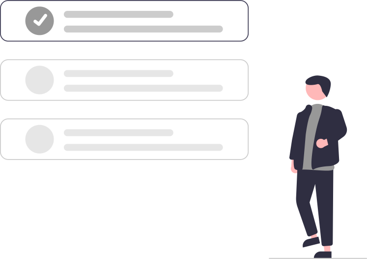

<mat-card class="card center">
  <div class="row max-height" cdkDropListGroup>
    <div class="accent-border-left"></div>
    <div class="column-full-height left-padding right-padding">
      <div class="display-flex top-padding">
        <div class="text-title">Select your skills</div>
      </div>
      <div class="input-container">
        <mat-form-field class="center input" appearance="outline">
          <mat-label>Search skill</mat-label>
          <span matPrefix>
            <mat-icon class="search-icon" matPrefix>search</mat-icon>
          </span>
          <input matInput [(ngModel)]="searchValue" (ngModelChange)="valuechange($event)" class="searchInput" />
          <button *ngIf="searchValue" matSuffix mat-icon-button aria-label="Clear" (click)="resetSearchValue()">
            <mat-icon>close</mat-icon>
          </button>
        </mat-form-field>
      </div>

      <div class="skill-list">
        <mat-chip-list class="chip" cdkDropList cdkDropListSortingDisabled [cdkDropListData]="filteredSkills"
          (cdkDropListDropped)="drop($event, 'source')">
          <mat-chip class="box" cdkDrag *ngFor="let skill of filteredSkills">
            {{ skill.name }}
          </mat-chip>
        </mat-chip-list>
      </div>
    </div>

    <mat-divider [vertical]="true"></mat-divider>

    <div class="column left-padding small-right-padding max-height">
      <div class="display-flex top-padding">
        <div class="text-title">Selected skills</div>
        <div class="text-selected-skills">- {{ amountSelectedSkills }}/5</div>
        <div class="text-minimum-skills">(minimum 3)</div>
      </div>

      <div class="display-flex">
        <div class="skill-list-container" cdkDropList cdkDropListSortingDisabled cdkDropListOrientation="horizontal"
          [cdkDropListData]="selectedSkills" (cdkDropListDropped)="drop($event, 'selection')">
          <div class="drag-drop-guide">
            Drag skills here to add to your list
          </div>
        </div>
      </div>

      <mat-chip-list class="chip" cdkDropList cdkDropListSortingDisabled [cdkDropListData]="selectedSkills"
        (cdkDropListDropped)="drop($event, 'selection')">
        <mat-chip class="box box-with-slider" [cdkDragDisabled]="true" cdkDrag *ngFor="
            let selectedSkill of selectedSkills;
            let index = index;
            trackBy: trackByIndex
          ">
          {{ selectedSkill.name }}

          <span class="remaining-space"></span>
          <div class="slider-space">1</div>
          <mat-slider [(ngModel)]="selectedSkills[index].level" class="slider" thumbLabel step="1" min="1" max="5">
          </mat-slider>

          5

          <button matChipRemove class="mat-chip-button" (click)="removeFromSelection(selectedSkill)">
            <mat-icon class="mat-chip-button-icon">cancel</mat-icon>
          </button>
        </mat-chip>
      </mat-chip-list>

      <!--  -->

      <div class="button-container">
        <button disabled="{{ isResetButtonDisabled }}" mat-raised-button class="reset-button" (click)="resetSkills()">
          Reset
          <mat-icon class="button-reset-icon">undo</mat-icon>
        </button>
        <button [class.spinner]="loading" disabled="{{ isContinueButtonDisabled }}" mat-raised-button
          class="continue-button" (click)="submitSkills()">
          Continue
          <mat-icon class="button-continue-icon">done</mat-icon>
        </button>
      </div>
    </div>

    <div class="accent-border-right"></div>
  </div>
</mat-card>